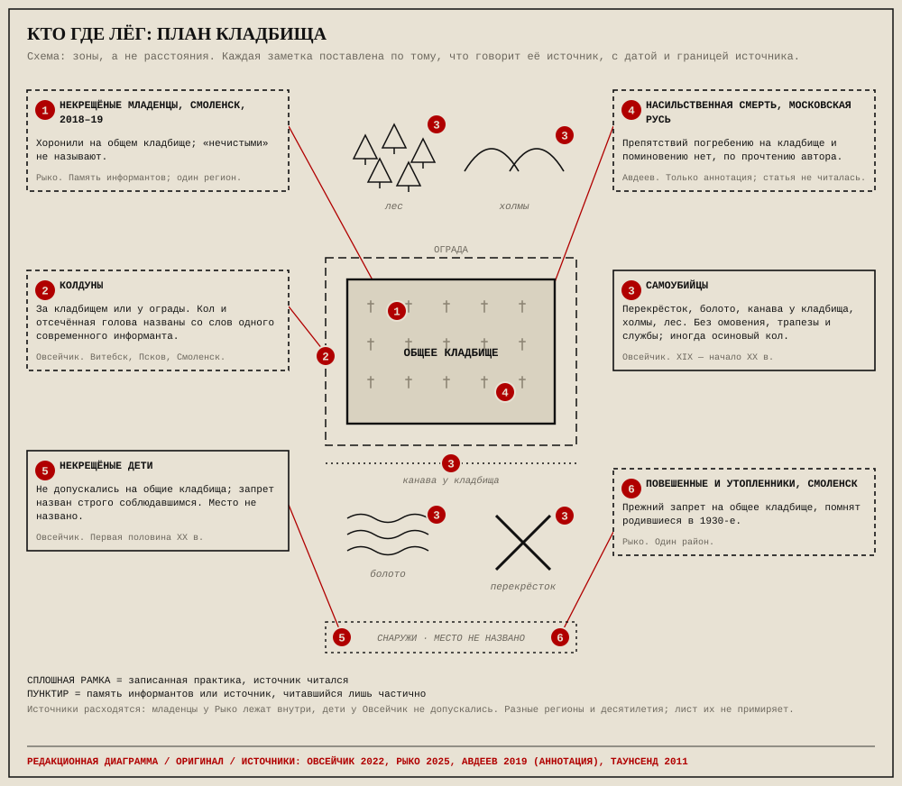
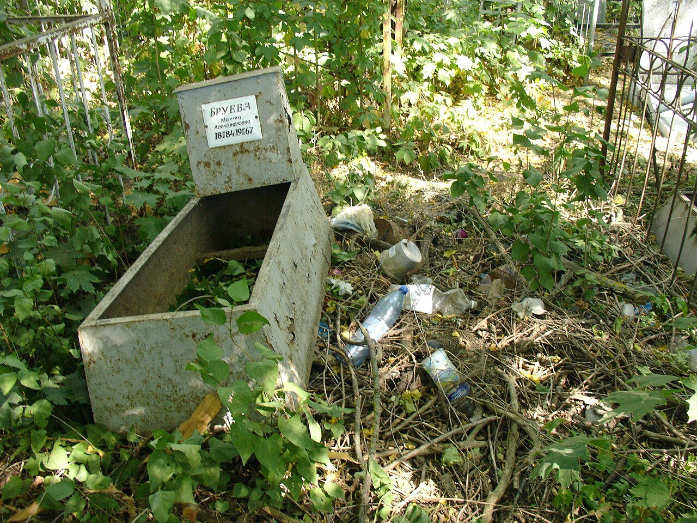

ТОМ III · ЛИСТ T · 02 / 04
НЕУПОКОЕННЫЕ МЁРТВЫЕ
«Нечистые» покойники, учёный термин и спор о происхождении
Кого не хоронили на общем кладбище, по какому источнику и в какое десятилетие; термин учёного отделён от слов информантов, а церковно-историческое возражение поставлено против прочтения «языческий пережиток».
Записи XIX — начала XX века; полевые работы 1990-х–2019 · Белорусско-русское пограничье: Витебская, Псковская и Смоленская области · Русские и белорусские поверья о «нечистых» покойниках
T / 01
Имя, созданное учёным
«Заложные покойники» — учёный термин. Дмитрий Зеленин ввёл его в 1916 году, взяв из вятского говора, где так называли умерших, «заложенных» хворостом, досками или кольями вместо того, чтобы лечь в землю. Он понимал его как отражение веры, что земля таких мёртвых не принимает, и применял ко всем «нечистым» покойникам.
В. Е. Овсейчик, работая с белорусско-русским пограничьем, отказывается распространять слово на всю категорию: оно не встречается в белорусской и других традициях, а способы погребения различались. Поэтому лист называет категорию «неупокоенные» и «нечистые» мёртвые, а слово «заложные» оставляет за тем, что имел в виду Зеленин.
T / 03
Три категории в одном пограничье
Материал Овсейчика из Витебской, Псковской и Смоленской областей строится вокруг трёх групп. Некрещёные дети, по поверьям, не попадают в рай и ночью летают, прося крестить; символическое крещение или наречение именем после смерти распространено широко. Их не пускали на общие кладбища, и автор называет запрет строго соблюдавшимся в первой половине XX века. Позднейшие записи чаще называют таких детей ангелами.
Самоубийцы в том же материале, по поверьям, уходят к дьяволу, а не к предкам. В XIX — начале XX века тело часто не обмывали, хоронили в одежде, в которой умер, без поминальной трапезы и церковной службы, иногда с осиновым колом вместо креста. В числе названных мест — перекрёсток, болото, ров у кладбища, холмы и лес. Респонденты ждали засухи и бурь, если самоубийца лежал на общем кладбище.
Колдуны были «нечистыми» независимо от способа смерти, потому что душу, по поверьям, забирал дьявол. Их хоронили за кладбищем или у ограды. Сообщаются радикальные меры: извлечение тела, отсечение головы с положением её между ног, осиновый кол через тело. Число информантов по этой категории в статье не названо.
T / ЗЕЛЕНИН 1927
Что Зеленин писал в 1927 году о гневе земли
В обзоре 1927 года Зеленин пишет, что и в XX, как в XIX веке, без могилы хоронят лишь тех покойников, которых считают нечистыми и опасными: прежде всего умерших насильственной смертью, особенно самоубийц, и умерших молодыми, раньше срока, назначенного при рождении. Севернорусские называют их заложными, от погребения, при котором тело не закапывают, а оставляют на земле, прикрыв сучьями (1991, с. 352). Обычай он называет очень древним и несомненно языческим — это его толкование, оспариваемое ниже. К Вятке слово он не возводит, как это делает первый раздел листа; первое утверждение взято из текста 1916 года в пересказе Овсейчика, второе — из самого текста 1927 года, и здесь они не сведены.
Как верование он описывает «гнев земли». Земля не принимает нечистый труп, он возвращается на поверхность, сколько его ни хорони; закопанный труп не тлеет, поэтому покойник может выходить из могилы ночью; а гнев земля выражает весенними заморозками и засухой, губящими посевы. Последнюю мысль он находит в проповедях Серапиона Владимирского (ум. 1274) и у Максима Грека, прибывшего в Москву в 1506 году, и ссылается на Хронику Авраамки под 1159 годом: киевский митрополит Константин велел выбросить своё тело за городскую черту собакам, что произвело на современников большое впечатление (с. 352–353).
Церковь, по его словам, требовала могил для всех крещёных, а люди выкапывали нечистые трупы и бросали в глухих местах; он называет случаи в памятниках XIII и XVI веков (Владимир, Москва). Компромиссом стал убогий дом, он же скудельница: яма под лёгким навесом за городом, куда без гроба и отпевания клали тела самоубийц, убитых, умерших от чумы, бродяг, иногда иноверцев, покрывали рогожей, но не землёй, и хоронили вместе на Семик. Он сообщает, что летописи упоминают временные ямы в годы чумы с 1215 года, а убогие дома стояли в городах Московского государства с XVI до конца XVIII века. После указа 1771 года крестьяне снова раскапывали такие могилы и бросали тела в реки, болота, овраги и леса; последний известный ему процесс прошёл в 1913 году в Саратовской губернии (с. 353–354). Даты и случаи принадлежат ему; летописи и судебные дела для этого издания не просматривались.
К его времени, пишет он, деревни заботились уже не о способе погребения, а о месте: люди возражали против захоронения на общих кладбищах, считая их чистыми, священными, общим достоянием предков, которым такое соседство было бы неприятно. Пьяницы среди нечистых покойников, как верили, высасывают влагу из земли вокруг могилы, чем и объясняли засуху (с. 354).
T / УСТЬ-ЦИЛЬМА
Усть-Цильма: собственный перечень рассказчиков
Статья Т. И. Дроновой 2024 года основана на интервью и наблюдении на похоронах у русских староверов-беспоповцев Усть-Цилемского района Республики Коми, на семейных рукописях и на причитаниях из архива Коми научного центра. Она перечисляет, кого община считает «нечистыми» усопшими: умерших без крещения; самоубийц (повесившихся, застрелившихся, утонувших); рожениц; мертворождённых; колдунов; пропавших без вести, чьи тела не преданы земле, кроме воинов; погибших в мирное время; убитых молнией; утонувших при невыясненных обстоятельствах; умерших в бане (с. 202). «Чистые» — умершие в старости, крещёные младенцы и отроки, умершие раньше срока, но исповедавшиеся, и погибшие на войне, которых причисляют к мученикам. Слова для неестественно умерших, которые она записывает, — самоубивец, висельник, задавленник, утопленник, утопшой; слова заложный в прочитанном тексте нет (с. 201).
Каждого самоубийцу разбирает наставник общины. Церковное правило запрещает поминовение, но он выясняет, был ли человек здоров или «без ума»; во втором случае его можно было поминать на общих службах и спустя несколько лет совершить отпевание, всегда подчёркивая, что смерть «нечистая». В остальных случаях лишь вселенские панихиды в родительские недели поминают их как «иже с ними», без имён, хотя милостыню подавать можно (с. 202–203). К телу нельзя было прикасаться голыми руками: его волокли крюками к месту погребения за деревней, чаще в низменное место, и закапывали в яму, куда бросали всё использованное — верёвку, рукавицы (вачеги), крюк. Это место обходили. Самоубийц начали хоронить на кладбищах в 1970-е годы по указанию сельской администрации, что вызвало гнев староверов; многие молитвенники полагали, что кладбища осквернены, а иные видели в этом начало «последних времён». Ещё недавно такие умершие «выпадали» из памяти живых, называть их по имени запрещалось; теперь родные ходят на кладбище и кадят, но индивидуальных поминовений не совершают (с. 203).
Если младенец умер некрещёным по небрежению родителей, это засчитывалось им в грех, который надо было исповедовать. По одному мнению, душа такого младенца не может обрести покой, по другому — она духовно слепа, но не погрязла в грехе и пребывает в некой «южной стране», не связанной с адом. Родственники сорок дней смотрели за могильным холмом: если земля оставалась неподвижной или поднималась, это знак «богоугодности», и за ребёнка можно было петь шестинедельную панихиду как за «безымянного»; если холм оседал, ребёнок нёс людям зло ещё во чреве и не поминался (с. 203–204). Староверы здесь — книгочеи, и рассказчица отвечала со ссылкой на святоотеческое слово о внезапно умирающих и утопающих; ответ наставника о человеке, провалившемся под лёд реки, был таков: каждую преждевременную смерть надо рассматривать отдельно. Это один район, один исследователь, не названные ею рассказчики и община, которая читает и взвешивает письменные церковные правила; поэтому перечень — суждение изнутри, а не свидетельство о более широком регионе (с. 201–204).
T / ДЕТИ
Некрещёные и рано умершие дети: что общеславянский обзор позволяет сказать о России
Статья Ирины Седаковой 2020 года в Folklore 80 — обзор смерти и похорон ребёнка у славян по архивным и полевым данным конца XIX — середины XX века. Она сообщает, что её собственные записи сделаны главным образом у болгар в Болгарии и в диаспоре (с. 48). Поэтому почти всё ниже — общеславянское или болгарское, и лишь несколько строк отнесены к русским местам.
Общее положение у неё такое: ребёнок, умерший без крещения и имени, попадает в ад «как будто не родился», а представление, что такие дети становятся нечистой силой, широко распространено. Она перечисляет места, отведённые для их погребения (под домом, под окном, во дворе, под деревом), и в прочитанном месте не разделяет регионы (с. 56). Для крещёных детей русские данные таковы: на Русском Севере в гроб клали нитку длиной с рост отца или матери, чтобы умерший ребёнок не перерос родителя и не «ходил» (со ссылкой на Листову 2001, с. 623); в Вологодской области маленькому клали под подушку яйцо (со ссылкой на Власову 1999, с. 392) (с. 58). Русские, со ссылкой на Науменко 1998, с. 116, считают, что ребёнок двух-трёх лет становится ангелом, а семилетний попадает в рай; судьба восьмилетнего решается по грехам (с. 61–62).
Это вторичные ссылки на этнографические сводки, и статья не говорит, какая деревня и какое десятилетие стоят за каждой. Их достаточно, чтобы показать: страх перед некрещёными умершими был и русским, а не только южнославянским. Для русской карты детских погребений их недостаточно: нужны первичные региональные записи.
T / НЕ ПУСТИТЬ ОБРАТНО
Два рода умерших и действия, которыми не пускали нечистых
Светлана Толстая делит славянских умерших на две группы: чистых, умерших обычной смертью, которые возвращаются в определённое время и никому не вредят, и нечистых (по-русски «заложные»), умерших рано или насильственно, как самоубийцы, повешенные или утопленники, или водившихся при жизни с нечистой силой. Она добавляет, что умершие любого рода могли вернуться из-за забвения или из тревоги за маленьких детей, и что защищались прежде всего от визитов нечистых (с. 10–11). Подробные защитные меры у неё взяты в основном из Полесья, которое не Россия: иглу в саване шили справа налево, гроб выносили ногами вперёд через боковую дверь или окно, на могилу клали камень или ветки, рассыпали мак и песок, чтобы умерший считал их до петухов, и вбивали осиновый кол (с. 9–11).
Для Русского Севера она приводит один пример: после выноса гроба пол подметали и мыли дом, всегда в сторону выхода (с. 10). В том же месте она говорит, что в разных славянских традициях переворачивали лавки и столы и выливали воду, а восточные славяне оставляли на могилах перевёрнутые горшки или миски; эти строки общие и русского места не называют (с. 10). В заключении она выдвигает более широкий тезис: большинство персонажей «низшей мифологии» — души таких умерших, и она возводит этот взгляд к работе Зеленина о русалках (с. 11–12).
Этот тезис оспаривается в литературе, которой пользуется атлас. Дынин, прочитанный для листа U, утверждает, что образ русалки недавний и составной, а происхождение от «заложных» по Зеленину объясняет лишь часть. Поэтому фраза на листе остаётся на уровне того, что Толстая говорит об умерших, а не о том, чем «на самом деле» являются фигуры народной демонологии.
T / КОЛЛЕКЦИОНЕР, 1903
Что Максимов писал о самоубийцах и утопленниках
Книга Сергея Максимова «Нечистая, неведомая и крестная сила», изданная в 1903 году Этнографическим бюро князя Тенишева после смерти автора, — общий труд о духах писателя и собирателя; источников отдельных сведений она почти не даёт, а издатели говорят, что завершили рукопись. Здесь она используется только для кратких конкретных утверждений, а не как обзор практики.
О самоубийцах он пишет, что набожные и строгие люди считали наложившего на себя руки «черту баран», и что утопленников и удавленников старались хоронить на том самом месте, где они совершили грех, под голой насыпью, без креста и вне кладбищенской ограды, чтобы они вернее попали во власть нечистой силы (с. 16–17 по пагинации, отмеченной в онлайн-копии переиздания 1994 года). О воде он сообщает, что синяки и царапины на теле утопленника показывали, что тот побывал в лапах водяного, и что для поиска тела пускали на воду деревянную чашку с тремя восковыми свечами, а она останавливалась над этим местом (с. 77–78, 83–84). О блуждании таких душ он добавляет, что девушкам-самоубийцам нет возврата из состояния русалки, а дети, случайно задушенные матерями во сне, переходили к «тайным людям» и считались погибшими, если мать не спасала их сорока днями молитвы и строгого поста (с. 20–21, 89).
Эти три сведения согласуются с тем, что лист берёт у Зеленина, Дроновой и Толстой: погребение самоубийц вне погоста и вера, что вода хранит своих мёртвых. Места и рассказчика они не называют, поэтому они свидетельствуют о том, что образованный собиратель 1890-х считал общим поверьем, а не о конкретной деревне.
Барсов в 1872 году пишет об Олонецком Севере: выкидышей и некрещёных детей хоронят за оградой, в болоте, а иногда зарывают в подызбице; самоубийцу в Воезерском погосте Каргопольского уезда зарывают в пяти верстах от церкви, проходящие обычно кладут здесь камни или палки, а когда палок наберётся много, их сжигают (сноска приписывает это сообщение Л. Малиновскому); удавившихся в Андоме зарывают на горе между елями, повернув лицом в землю (с. 312–313). Это два-три места, а не карта, и Церковь таких действий не предписывала. По типу они совпадают с тем, что на этом листе приведено из других регионов: место в стороне, камни или палки от прохожих, перевёрнутое тело.

T / 04
Ходячие мертвецы и литературные вампиры
Овсейчик приводит записи XIX — начала XX века (Добровольский, Богданович) о том, что умершие колдуны ходили, убивали людей и пили их кровь, и добавляет вслед за Виноградовой и Левкиевской, что для восточнославянской области такие рассказы редки и скорее черта южнославянских вампирских поверий. Материал пограничья в основном о том, где и как хоронили нечистых мёртвых, а не о том, что они делали, восстав.
Упырь русской прозы XIX века — другое дело. Аннотация одной диссертации помещает литературного вампира как приём русской словесности с XVIII века, выросший из более старых верований. Атлас держит их порознь: прочитанные для листа полевые записи не описывают фигуру, похожую на литературного вампира, и ничто здесь не служит свидетельством в её пользу.
T / 05
Зеленин и его критики
Сводка Зеленина 1916 года собрала сообщения из многих губерний под одним заголовком и прочитала их вместе как единое верование: земля не принимает умерших «неестественною» смертью, поэтому они остаются среди живых. Категорию он связал с русалками. В прочитанных для этого листа источниках есть три возражения.
Овсейчик не хочет распространять слово «заложные» за пределы вятского употребления: его нет в белорусской и других традициях, а способы погребения различались. Авдеев по эпитафиям и письмам церковных иерархов доказывает, что связанные с этим суеверия относятся к христианским временам, а не к языческим пережиткам; прочитана только его аннотация. Критика Байбурина, направленная против прочтения обрядов как пережитков прежней религии, — общее возражение методу, а не приговор доказательствам Зеленина.
Годным остаётся датированная запись. Местные сообщения сводки, такие как погребения в оврагах на листе N и ссылки на Семик на листе O, — свидетельства того, что кто-то записал, от кого и где. Объединяющее верование — построение Зеленина. Там, где запись здесь прочитана, она приводится по месту.
T / 06
Спор о происхождении правила
Этнографы конца XIX и XX века принимали такие погребальные обычаи за языческие пережитки. А. Авдеев для Московской Руси утверждает обратное: по эпитафиям XVI — начала XVIII века и посланиям иерархов церкви он не находит препятствий к погребению на кладбище и регулярному поминовению умерших насильственной смертью и считает связанные суеверия возникшими в христианское время.
У листа только аннотация. Он не может сказать, насколько сильны доводы Авдеева и как далеко его вывод выходит за московские источники. Он поставлен здесь, чтобы прочтение «языческий пережиток» не стояло в одиночестве.
T / 07
Правило, которое помнят, 2018–2019
Полевая работа А. Рыко в Хиславичском районе Смоленской области нашла лишь остатки таких верований. Информанты 1930-х годов рождения помнят, что повесившихся и утопившихся не везли на общее кладбище; молодые говорят, что ничего об этом не знают и что утонувшие лежали на кладбище. Некрещёных младенцев там «нечистыми» не считали. Сегодня никто не говорит, что определённые мёртвые могут вернуться и навредить живым.
Рядом с Овсейчиком два исследования охватывают соседние районы и разные десятилетия одного века и не совпадают по некрещёным детям. Автор пишет, что выводы держатся на памяти и что неясно, местная ли это тенденция.
T / 08
Кто где лежал, по какому источнику
| Группа | Сообщаемое погребение | Источник и статус |
|---|---|---|
| Самоубийцы | Вне общего кладбища: перекрёсток, болото, ров у кладбища, холмы, лес; без поминальной трапезы и службы | Овсейчик; XIX — начало XX века, пограничье |
| Колдуны | За кладбищем или у ограды; сообщаются кол и отсечённая голова | Овсейчик; число информантов не названо |
| Некрещёные дети | Не пускали на общие кладбища в полоцко-псковской зоне | Овсейчик; первая половина XX века |
| Некрещёные младенцы (Смоленщина, 2018–19) | Общее кладбище; не «нечистые» | Рыко; память информантов |
| Повесившиеся и утопившиеся (Смоленщина) | Прежний запрет на общее кладбище, который помнят родившиеся в 1930-х | Рыко; один район |
| Насильственная смерть, Московская Русь | Нет препятствий к погребению на кладбище и поминовению — по прочтению автора | Авдеев; только аннотация |


Unquiet dead
Нечистые мертвецы: категория Зеленина (1927)
Оригинал
Отрывок Paraphrase of Zelenin § 15 on the zalozhnye (unquiet dead). The original argument is more detailed; this atlas renders the definitional core.
Zelenin's § 15 introduces the term 'zalogny' (from 'zalog', pledge or pawn) to describe the dead who are still, in a sense, owed to the living world. His central claim is that the belief in unquiet dead rests not on moral judgment but on a prematurely interrupted lifespan: the earth does not want what it is not yet due. Critics have questioned whether the term 'zalogny' was used by informants or only by Zelenin as a scholarly category.
- заложный / заложенные
- Zelenin's term for the prematurely dead who cannot be buried in consecrated ground until their natural lifespan expires. Regional informants used various terms; Zelenin unified them.
Источник D. K. Zelenin, Vostochnoslavianskaia etnografiia (Russian translation, Moscow, 1991), § 15.
Права PARAPHRASE. Zelenin died in 1954; original published 1927. This atlas paraphrases.
Аппарат источники · связанные листы · термины
Источники этого листа
- ovseichik2022 Овсейчик В. Е. — «Нечистые» покойники в представлениях населения белорусско-русского (Полоцко-Псковского и Витебско-Смоленского) пограничья (2022)
- ryko2025 Рыко А. — Funeral Rites in the Russian-Belarusian Borderland: Traditions and Innovations (2025)
- avdeev2019 Авдеев А. — Суеверия, погребальные обряды и древнерусская эпиграфика (2019)
- townsend2011 Таунсенд Д. А. — From Upyr' to Vampire: The Slavic Vampire Myth in Russian Literature (2011)
- zelenin1916 Зеленин, Дмитрий К. — Очерки русской мифологии. Вып. 1: Умершие неестественною смертью и русалки (1916)
- baiburin1993 Байбурин, Альберт Кашфуллович — Ритуал в традиционной культуре (1993)
- zelenin1927 Зеленин, Д. К. — Восточнославянская этнография (перевод книги «Russische (Ostslavische) Volkskunde», Берлин–Лейпциг, 1927, пер. К. Д. Цивиной) (1991 (German original 1927))
- dronova2024 Дронова, Т. И. — Тема смерти в картине мира староверов-беспоповцев Усть-Цильмы (2024)
- sedakova2020 Седакова, Ирина — Unlived Life: The Death and Funeral of a Child in Slavic Traditional Culture (Непрожитая жизнь: смерть и похороны ребёнка в славянской традиционной культуре) (2020)
- dynin1994 Дынин, В. И. — Некоторые особенности мифологического образа русалки у восточных славян (1994)
- tolstaya2024 Толстая, Светлана М. — The Living and the Dead in Slavic Folk Culture: Modes of Interaction between Two Worlds (Живые и мёртвые в славянской народной культуре: способы взаимодействия двух миров) (2024)
- maksimov1903 Максимов, С. В. — Нечистая, неведомая и крестная сила (1903)
- barsov1872 Барсов, Елпидифор Васильевич — Причитания Северного края (1872–1886)
Ссылки, даты обращения и ограничения — в списке источников.